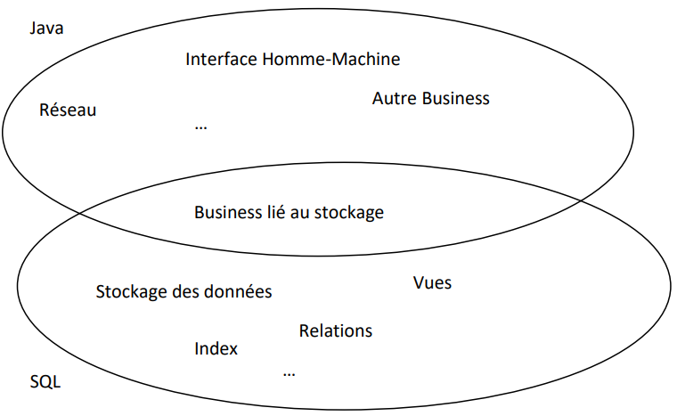

Partie SQL 2ème année :
L'algèbre relationnelle :
La première façon de manipuler de telles bases de données est d'utiliser un langage algébrique basé sur plusieurs opérateurs. Ci-dessous, sont proposés cinq opérateurs de base, suivi de quatre autres (qui ne sont pas indispensables car ils peuvent s'écrire au moyen des cinq premiers, mais augmentent le confort de manipulation).
Opérateurs de base :
-
Union :
L'union de deux tables R et S, que l'on notera R ∪ S, est l'union au sens ensembliste des tuples des deux tables. Pour que le résultat soit encore une table, il faut que R et S comportent le même nombre de colonnes, et que si les colonnes ont des noms d'attributs, ces noms soient identiques et que les colonnes qui se correspondent dans les deux tables aient des domaines (ou au moins compatibles).
-
Différence :
Il s'agit ici de la différence au sens ensembliste de tuples de deux tables. Les mêmes restrictions s'appliquent que pour l'union. On notera R - S ou R \ S.
-
Produit cartésien :
Si R est une table comportant r colonnes et S une table comportant s colonnes, leur produit cartésien RxS est une table comportant r+s colonnes héritant leurs noms d'attributs de ceux de R et S, et contenant pour tuples tous les tuples que l'on peut obtenir en juxtaposant un tuple de R et un tuple de S. Si R contient n tuples et que S en contient p, RxS en contiendra nxp. Si des attributs de R et S ont même noms, on les distinguera en mentionnant la table d'origine : R.i, S.i.
-
Projection :
Si i,j,...,k sont des numéros de colonnes ou des noms d'attributs d'une table R, l'opérateur unaire de projection sur i,j,...,k est défini comme suit : la table πi,j,...,k (R) est obtenue à partir de R en ne conservant que les colonnes i,j,...,k, et bien sûr en supprimant du résultats les éventuels tuples qui seraient identiques à d'autres.
-
Sélection :
Soit R une table, et F une formule logique constituée :
- de numéros ou noms d'attributs
- de constantes
- d'opérateurs arithmétiques ou autres s'appliquant aux constantes et aux domaines des attributs
- d'opérateurs de relation (=, <, >, etc.)
- d'opérateurs logiques : NOT, AND, OR.
Alors l'opérateur de sélection est définies comme suit : la table σF(R) est la table comportant les mêmes attributs que R, et contenant les tuples de R qui satisfont à la condition F (c'est-à-dire qui donnent la valeur TRUE à F si on y remplace les nomms d'attributs par les valeurs prises par ces attributs dans le tupke concerné).
Opérateurs additionnels :
-
Intersection :
L'intersection R ∩ S est définiede façon similaire à l'union. Rappelons que : R ∩ S = R - (R - S).
-
Quotient :
Soient R et S deux tables contenant respectivement r et s colonnes, avec s < r. Supposons en outre que les noms d'attributs de S forment un sous-ensemble de ceux de R et queS ne soit pas vide. On définira le quotient R : S comme étant la table comportant r-s attributs (ayant pour noms ceux de la table R qui sont absents de la table S), et contenant comme tuples t ceux pour lesquels, pour tout tuple u de S, la combinaison "tu" soit dans R.
On peut définir cet opérateur à partir des cinq premiers de la façon suivante : si i,j,...,k sont les attributs présents dans R mais absents de S, on a :
R : S = πi,j,...,k (R) - πi,j,...,k (R) x S) - R).
-
Jointure :
Si i est un attribut de R et j un attribut de S, la jointure R JOINi=j S est la table obtenue en prenant le produit cartésien de R et S, dont ne conserve que les tuples pour lesquels les valeurs de l'attribut R.i et de l'attribut S.j sont égales. On peut de même définir des jointures basées sur d'autres opérateurs de relation (par exemple : R JOINi<j S) ou sur des conditions combinées (par exemple : R JOIN(i=j and k≠l) S).
Le cas où l'opérateur d'égalité "=" est le seul présent est appelé "équijointure".
-
Jointure naturelle :
La jointure naturelle de deux tables R et S comportant un ou plusieurs attributs identiqes (mêmes noms et mêmes domaines) est la table R JOIN S obtenue en effectuant tout d'abord une équijointure selon les attributs provenant de S qui sont des duplicatas d'attributs provenant de R.
Exemples :
| Nom | Destination | Code-dépl |
|---|---|---|
| Dufour | Paris | 321 |
| Dufour | Milan | 325 |
| Durand | Paris | 360 |
| Dutoit | Paris | 322 |
| Dutoit | Paris | 312 |
| Dutoit | Oslo | 319 |
| Nom |
|---|
| Dutoit |
| Dufour |
| Nom | Destination | Code-dépl |
|---|---|---|
| Dufour | Paris | 321 |
| Dufour | Milan | 325 |
| Durand | Paris | 588 |
| Janssens | Prague | 322 |
| Nom | Rembours |
|---|---|
| Dufour | 2 |
| Dutoit | 4 |
| Janssens | 0 |
| Albrecht | 2 |
| Fanuel | 3 |
| Nom | Destination | Code-dépl |
|---|---|---|
| Dufour | Paris | 321 |
| Dufour | Milan | 325 |
| Durand | Paris | 360 |
| Dutoit | Paris | 322 |
| Dutoit | Paris | 312 |
| Dutoit | Oslo | 319 |
| Durand | Paris | 588 |
| Janssens | Prague | 322 |
| Nom | Destination | Code-dépl |
|---|---|---|
| Durand | Paris | 360 |
| Dutoit | Paris | 322 |
| Dutoit | Paris | 312 |
| Dutoit | Oslo | 319 |
| R.Nom | Destination | Code-dépl | T.Nom | Rembours |
|---|---|---|---|---|
| Dufour | Paris | 321 | Dufour | 2 |
| Dufour | Paris | 321 | Dutoit | 4 |
| Dufour | Paris | 321 | Janssens | 0 |
| Dufour | Paris | 321 | Albrecht | 2 |
| Dufour | Paris | 321 | Fanuel | 3 |
| Dufour | Milan | 325 | Dufour | 2 |
| ... | ... | ... | ... | ... |
| Dufour | Oslo | 319 | Fanuel | 3 |
| Nom | Destination | Code-dépl | Rembours |
|---|---|---|---|
| Dufour | Paris | 321 | 2 |
| Dufour | Milan | 325 | 2 |
| Dutoit | Paris | 322 | 4 |
| Dutoit | Paris | 312 | 4 |
| Dutoit | Oslo | 319 | 4 |
| Nom | Destination |
|---|---|
| Dufour | Paris |
| Dufour | Milan |
| Durand | Paris |
| Dutoit | Paris |
| Dutoit | Oslo |
| Nom | Rembours |
|---|---|
| Dufour | 2 |
| Janssens | 0 |
| Albrecht | 2 |
L'analyse relationnelle :
Les notations ensemblistes permettent d'atteindre les mêmes résultats. Ainsi, pour les exemples qui précèdent, on pourrait utiliser les notations équivalentes suivantes :
R ∪ S = { t | t ∊ R ou t ∊ S }
R - S = { t | t ∊ R et t ∉ S }
R x T = { (R.Nom, Destination, Code-dépl, T.Nom, Rembours) | (R.Nom, Destination, Code-dépl) ∊ R et (Nom, Rembours) ∊ T }
R JOIN T = { (Nom, Destination, Code-dépl, Rembours) | (Nom, Destination, Code-dépl) ∊ R et (Nom, Rembours) ∊ T }
ou encore
R JOIN T = { (Nom, Destination, Code-dépl, Rembours) | (R.Nom, Destination, Code-dépl) ∊ R et (T.Nom, Rembours) ∊ T et R.Nom = T.Nom;
πNom,Destination(R) = { (Nom, Destination) | ∃ Code-dépl : (Nom,Destination,Code-dépl) ∊ R }
σRembours<3(T) = { (Nom, Rembours) ∊ T | Rembours < 3 }
Ces notations ensemblistes ont directement inspiré le langage SQL, comme le montrent les exemples suivants :
R JOIN T s'obtient par l'instruction
SELECT R.Nom, Destination, Code-dépl, Rembours
FROM R, T
WHERE R.Nom = T.nom;σRembours<3(T) s'obtient par l'instruction
SELECT Nom, Rembours
FROM T
WHERE Rembours < 3;Coalesce :
Dans une requête, il est possible d'utiliser l'expression COALESCE pour remplacer une valeur NULL par une valeur conventionnelle (par exemple la valeur 0 ou la chaîne vide).La particularité de cette fonction est d'accepter autant de paramètres que l'on veut. Elle renvoie la première expression évaluable (donc différente de NULL) dans l'ordre d'écriture (de gauche à droite).
Sa syntaxe est la suivante :
COALESCE (expression1 [, expression2 [, expression3 [ ... ] ] ])Exemple :
SELECT au_id, au_fname, au_lname, COALESCE (country, state, 'état et pays inconnus')
FROM authors;Pour chaque auteur, cette requête affichera quatre champs. Les trois premiers champs seront l'id, le prénom et le nom de l'auteur. Si son pays est différent de NULL, le quatrième champ sera son pays. Si son pays est NULL mais que son état est différent de NULL, alors le quatrième champ sera son état. Si son pays et son état sont NULL, alors le quatrième champ sera la chaîne de caractères 'état et pays inconnus'.
Union, Intersection, Différence :
SELECT [ ALL | DISTINCT ]
* | expression [ [ AS ] nom_d_affichage ] [, ...]
[ FROM éléments_from [, ...] ]
[ WHERE condition ]
[ GROUP BY expression [, ...] ]
[ HAVING condition [, ...] ]
[ { UNION | INTERSECT | EXCEPT } [ ALL ] select ]
[ ORDER BY order_expression [ ASC | DESC ] [, ...] ]-
L'opérateur UNION calcule l'union ensembliste des lignes renvoyées par les instructions SELECT impliquées. Une ligne est dans l'union de deux ensembles de résultats si elle apparaît dans au moins un des ensembles. Les deux instructions SELECT qui représentent les opérandes directes de l'UNION doivent produire le même nombre de colonnes et les colonnes correspondantes doivent être d'un type de données compatible.
Sauf lorsque l'option ALL est spécifiée, il n'y a pas de doublons dans le résultat de UNION ALL empêche l'élimination des lignes dupliquées. UNION ALL est donc significativement plus rapide qu'UNION, et sera préféré.
Si une instruction SELECT contient plusieurs opérateurs UNION, ils sont évalués de gauche à droite, sauf si l'utilisation de parenthèses impose un comportement différent.
-
L'opérateur INTERSECT calcule l'intersection des lignes renvoyées par les deux instructions SELECT impliquées. Une ligne est dans l'intersection des deux ensembles de résultats si elle apparaît dans chacun des des ensembles.
Le résultat d'INTERSECT ne contient aucune ligne dupliquée sauf si l'option ALL est spécifiée. Dans ce cas, une ligne dupliquée m fois dans la table gauche et n fois dans la table droite apparaît min(m, n) fois dans l'ensemble de résultats.
Si une instruction SELECT contient plusieurs opérateurs INTERSECT, ils sont évalués de gauche à droite, sauf si l'utilisation de parenthèses impose un comportement différent. INTERSECT a une priorité supérieur à celle d'UNION. C'est-à-dire que A UNION B INTERSECT C est lu comme A UNION (B INTERSECT C).
-
L'opérateur EXCEPT calcule l'ensemble des lignes qui appartiennent au résultat de l'instruction SELECT de hauche pas à celui de droite.
Le résultat d'EXCEPT ne contient aucune ligne dupliquée sauf si l'option ALL est spécifiée. Dans ce cas, une ligne dupliquée m fois dans la table gauche et n fois dans la table droite apparaît max(m-n, 0) foi dans l'ensemble de résultats.
Si une instruction SELECT contient plusieurs opérateurs EXCEPTn ils sont évalués de gauche à droite, sauf si l'utilisation de paenthèses impose un comportement différent. EXCEPT a la même priorité qu'UNION.
Exemples :
-
Quelles sont les villes où l'on peut trouver un auteur et/ou un éditeur ?
(SELECT DISTINCT city FROM authors) UNION (SELECT DISTINCT city FROM publishers); -
Pour chaque éditeur, donnez son nom et le nombre de livres de psychologie qu'il a édité. Classez le tout par ordre décroissant de nombre de livres.
( SELECT P.pub_name, COUNT (title_id) FROM publishers P, titles T WHERE p.pub_id = t.pub_id AND type = 'psychology' GROUP BY P.pub_name ) UNION ( SELECT pub_name, 0 FROM publishers WHERE pub_id NOT IN ( SELECT pub_id FROM titles WHERE type = 'psychology' ) ) ORDER BY DESC;
OUTER JOIN (Jointures externes) :
SELECT [ ALL | DISTINCT ]
* | expression [ [ AS ] nom_d_affichage ] [, ...]
[ FROM éléments_from [, ...] ]
[ WHERE condition ]
[ GROUP BY expression [, ...] ]
[ HAVING condition [, ...] ]
[ { UNION | INTERSECT | EXCEPT } [ ALL ] select ]
[ ORDER BY order_expression [ ASC | DESC ] [, ...] ]-
avec éléments_from qui peut être :
nom_table [ * ] [ [ AS ] alias [ ( alias_colonne [, ...] ) ] ] [,éléments_from] éléments_from [ NATURAL ] type_jointure éléments_from [ ON condition_jointure | USING ( colonne_jointure [, ...] ) ] -
avec type_jointure qui peut être :
- [ INNER ] JOIN : équivalent à la jointure habituelle où la condition de jointure est exprimée dans la partie WHERE du SELECT.
- LEFT [ OUTER ] JOIN : tous les tuples de la table de gauche font partie du résultat; ils sont joints à la table de droite quand c'est possible de par la condition de jointure. Sinon les colonnes correspondantes à la table de droite sont remplies de NULL.
- RIGHT [ OUTER ] JOIN : identique à LEFT [ OUTER ] JOIN mais en inversant les tables de gauche et de droite.
- FULL [ OUTER ] JOIN : tous les tuples de la table de gauche et de droite font partie du résultat, joints quand c'est possible sinon les colonnes manquanes sont remplies de NULL.
Une condition de jointure doit être choisie entre :
- ON condition_jointure permet d'exprimer une condition de jointure sous un fore similaire à la condition du WHERE.
- USING ( a, b, ... ) est un raccourci pour ON table_gauche.a = table_droite.a AND table_gauche.b = table_droute.b.
- NATURAL est un raccourci pour une liste USING qui mentionne toutes les colonnes de même nom dans les deux tables.
Normalisation :
Maintenant que l'on est capable de créer une table, il faut décider où placer les données. Il faut donc trouver une combinaison de tables possédant des relations entre elles et permettant d'exploiter les données. Ceci s'appelle un schéma.
Pour tout jeu de données, il existe une multiyude de schémas possibles permettant de les organiser. Cependant, de part la nature même du modèle relationnel, certains schémas s'avèrent meilleurs que d'autres. Par exemple, certains schémas évitent de dupliquer des données, enlevant ainsi un risque d'incohérence (la même donnée qui devrait être dupliquée à l'identique finit par avoir des valeurs différentes). On dit qu'un schéma est normalisé à une certaine forme lorsqu'il respecte les critères de cette forme. La normalisation est l'acte consistant à transformer un schéma pour atteindre une forme normalisée. Dans le cadre de ce cours, nous verrons uniquement les trois premiers niveaux.
1FN - première forme normale :
Relation dont tous les attributs :
- contiennent une valeur atomique (les valeurs ne peuvent pas être divisées en plusieurs sous-valeurs dépendant également individuellement de la clé primaire).
- contiennent des valeurs non répétitives (le cas contraire consiste à mettre une liste dans un seul attribut).
- sont constants dans le temps (utiliser par exemple la date de naissance plutôt que l'âge).
Le non respect de deux premières conditions de la 1FN rend la recherche parmi les données plus lente parce qu'il faut analyser le contenu des attributs. La troisième condition quant à elle évite qu'on doive régulièrement mettre à jour les données.
2FN - deuxième forme normale :
Respecte la deuxième forme normale, la relation respectant la première forme normale et dont :
- Tous les attributs non-clés sont totalement dépendants fonctionnellement de la totalité de la clé primaire.
Le non respect de la 2FN entraîne une redondance des données qui encombrent alors inutilement la mémoire et l'espace disque.
3FN - troisième forme normale :
Respecte la troisième forme normale, la relation respectant la seconde forme normale et dont :
- Tout attribut n'appartenant pas à une clé ne dépend pas d'un attribut non clé.
Le non respect de la 3FN peut également entraîner une redondance des données.
Dénormalisation :
La normalisation permet de garantir la cohérence des données et permet d'éviter des problèmes inutiles. On cherchera donc en général à normaliser son schéma complètement. Il peut cependant y avoir des exceptions pour lesquelles on dénormalisera le schéma :
- On pourrait avoir dans un schéma unique des tables appartenant logiquement à des schémas séparés. L'exemple typique est la table d'archivage ou d'audit qui duplique l'information se trouvant dans les autres tables en les mettant complètement à plat (un tuple contient toute l'information sans devoir effectuer une jointure avec une autre table). Cette table n'est évidemment pas du tout normalisée de par sa nature même.
- La normalisation force à multiplier les tables, ce qui impose une pénalité à l'exécution. Pour résoudre les problèmes de performance uniquement, on accepte d'enlever la normalisation. Cependant, il existe quand même une technique permettant de s'assurer de la consistance des données, confer TRIGGER plus loin.
Exemple :
Dans la base de données pub2, il y a un champ total_sales dans la table titles : ce champ ne dépend pas uniquement de la clé primaire de titles, il dépend aussi directement du contenu de la table salesdetail. Cependant, c'est une information dont on a fréquemment besoin dans le cadre de l'application utilisant pubs2, et pour garder de bonnes performances ce champ est dénormalisé. Comme il est dénormalisé, il y a un risque qu'il ne soit pas synchronisé correctement par rapport à la valeur réelle qu'il doit prendre.
DROP TABLE :
DROP TABLE nom;ALTER TABLE :
ALTER TABLE nom [ * ]
action [, ... ]
ALTER TABLE nom [ * ]
RENAME [ COLUMN ] colonne TO nouvelle_colonne
ALTER TABLE nom
RENAME TO nouveau_nom-
action peut être :
ADD [ COLUMN ] colonne type [ contrainte_colonne [ ... ] ] DROP [ COLUMN ] colonne ALTER [ COLUMN ] colonne [ SET DATA ] TYPE type [ USING expression ] ALTER [ COLUMN ] colonne SET DEFAULT expression ALTER [ COLUMN ] colonne DROP DEFAULT ALTER [ COLUMN ] colonne { SET | DROP } NOT NULL ADD contrainte_table DROP CONSTRAINT nom_contrainte
Exemples :
-
Ajouter une colonne de type VARCHAR à une table :
ALTER TABLE publishers ADD COLUMN continent VARCHAR (30); -
Changer le type de la colonne :
ALTER TABLE publishers ALTER COLUMN continent TYPE VARCHAR (20); -
Supprimer la colonne :
ALTER TABLE publishers DROP COLUMN continent;
Séquences :
CREATE SEQUENCE nom [ INCREMENT [ BY ] incrément ]
[ MINVALUE valeurmin | NO MINVALUE ]
[ MAXVALUE valeurmax | NO MAXVALUE ]
[ START [ WITH ] début ]- CREATE SEQUENCE crée un nouveau générateur de séquence de nombres. Cela implique la création et l'initialisation d'une nouvelle table à une seule ligne nommée nom.
La séquence est surtout utile pour laisser la base de données générer elle-même des identifiants uniques pour les tuples. Pour réaliser cela, il faut créer une séquence d'un certain nom (par exemple 'ABC') et dire que la valeur par défaut de la colonne est nextval ('ABC').
En PostgreSQL, on utilisera donc une séquence pour générer des clefs primaires automatiquement. D'autres bases de données utilisent d'autres approches pour générer des clefs primires automatiquement. On parle parfois d'AUTO-INCREMENT ou d'IDENTITY. Dans ce cas, lors de l'insertion d'un nouveau tuple, on ne spécifie pas de valeur pour la clef primaire. Par contre, on pourra vouloir directement récupérer sa valeur via la partie RETURNING de l'INSERT.
Serial :
Une séquence est implicitement créée lorsque l'on déclare la création d'une table avec une colonne de type SERIAL. La colonne se transformera en type INTEGER mais sa valeur par défaut suivra l'ordre d'une séquence.
Exemple :
CREATE TABLE nom_de_table (
nom_de_colonne SERIAL
);Cette dernière instruction est équivalente à :
CREATE SEQUENCE nom_de_table_nom_de_colonne_seq;
CREATE TABLE nom_de_table (
nom_de_colonne integer DEFAULT nextval('nom_de_table_nom_de_colonne_seq') NOT NULL
);Dans la plupart des cas, vous voudrez aussi aujouter une contrainte PRIMARY KEY pour préciser que cet attribut est la clé primaire, mais ce n'est pas automatique.
Gestion d'une base de données :
À ce stade, nous sommes capables de créer les tables d'une base de données, d'y mettre des données et de l'interroger. Cela ne couvre cependant par tous les besoins d'une base de données en situation réelle. Dans la suite, on va aborder des besoins fréquents.
-
SQL Procédural :
Au-delà de fournir des instructions SQL manipulant le schéma et les tuples d'une base de données, on peut aussi vouloir donner plus d'intelligence au serveur.
- Comme le serveur est le dernier intervenant avant le stockage physique des données, c'est un bon candidat pour valider la cohérence des données avant d'écrire n'importe quoi. Ceci est d'ailleurs déjà l'intention des contraintes d'intégrité. Mais au-delà de ces contraintes, il existera toujours des cas particuliers qu'elles ne peuvent pas valider. Par exemple, on pourrait vouloir vérifier qu'un numéro de carte de banque respecte la validation numérique qu'elle est sensée avoir (les deux derniers chiffres sont le modulo 97 du restant).
- Le serveur est aussi un bon candidat pour gérer automatiquement la cohérence des données dénormalisées. Il pourra s'assurer que ces données seront mises à jour correctement automatiquement dès que nécessaire. Par exemple, dans pubs2, le champ total_sales de la table titles correspond à un calcul sur les ventes de ce livre. On pourra configurer le serveur pour effectuer la mise à jour de ce champ dès qu'une nouvelle vente est insérée.
- On pourra aussi vouloir abstraire de la complexité sous-jacente des données en fournissant des fonctions de haut niveau. Par exemple, à la place de laisser un client manipuler différentes tables pour réaliser une opération complexe, le serveur fournira une fonction qui se charge de réaliser l'intégralité de la tâche. Si le schéma de la base de données change, c'est uniquement les fonctions du serveur qui devront être mises à jour, le client pourra rester inchangé.
Il faut donc un langage de programmation complet (au sens de Turing : http://fr.wikipedia.org/wiki/Turing-complet) pour réaliser toute cette intelligence. Les systèmes de base de données modernes (dont fait partie PostgreSQL) permettent même de choisir le langage de programmation que l'on soihaite. Historiquement, on utilisait des langages procéduraux qui sont des extensions du SQL de base. Comme ces langages datent des années 70, les concepts présents dans les langages modernes n'en font pas partie. En particulier, il n'y a pas de notion d'objets. Dans le cadre de cours, nous utiliserons PL/pgSQL. Cette section introduit brièvement ce langage, veuillez-cous référer à la documentation en ligne de PostgreSQL pour plus de détails (http://docs.postgresqlfr.org/).
-
CREATE FUNCTION :
CREATE FUNCTION nomFonction(type1, type2,..., typeX) RETURNS typeOut AS $$ corpsFonction $$ LANGUAGE plpgsql;Définit une fonction qui prend X paramètres qui sont de type type1, type2, ..., typeX et qui retourne une valeur de type typeOut. corpsFonction contient la définition de la fonction, voir ci-dessous. Une fonction ainsi créée fait partie intégrante de la base de données, c'est pourquoi on l'appelle parfois "procédure stockée". La commande DROP FUNCTION nomFonction permet d'effacer la fonction.
Attention, les délimitateurs $$ et l'instruction LANGUAGE plpgsql font partie intégrante de la définition de la fonction.
Une fois définie, une fonction se comporte comme une expression. Ainsi, on utilisera la commande SELECT nomFonction (param1, param2, ..., paramX) pour afficher le résultat de son exécution.
-
DECLARE :
CREATE FUNCTION nomFonction(type1, type2,..., typeX) RETURNS typeOut AS $$ DECLARE nomParam1 ALIAS FOR $1 ; nomParam2 ALIAS FOR $2 ; ... nomParamX ALIAS FOR $X ; nomVar1 typeVar1; nomVar2 typeVar2; ... nomVarY typeVarY; BEGIN corpsDeclare ; END ; $$ LANGUAGE plpgsql;DECLARE définit les variables internes à la fonction. ALIAS FOR permet de donner un nom explicite a un paramètre particulier. Pour des variables locales, il faut d'abord donner leur nom suivi de leur type.
-
Affectation :
variable := expression; -
Commentaire :
-- tout ce qui suit -- est ignoré jusqu'à la fin de la ligne -
Structures de contrôle :
RETURN expression;Termine l'exécution de la fonction en renvoyant la valeur calculée par expression.
IF ... THEN ... END IF ; IF ... THEN ... ELSE ... END IF ; IF ... THEN ... ELSIF ... THEN ... ELSE ... END IF ; FOR record IN instructionSelect LOOP ... END LOOP ;record doit être une variable de type RECORD. L'instruction FOR fera un parcours successif des tuples retournées par l'instruction SELECT. On pourra accéder aux différents champs du tuple en cours par record.nomChamp.
Exemple :
CREATE FUNCTION compteSalesDetailQty() RETURNS INTEGER AS $$ DECLARE i integer := 0; record RECORD; BEGIN FOR record IN SELECT * FROM Salesdetail LOOP i := i + record.qty; END LOOP; RETURN i; END; $$ LANGUAGE plpgsql; SELECT compteSalesDetailQty();Ceci est équivalent à :
SELECT SUM (qty) FROM Salesdetail;Remarque importante : il n'y a aucune valeur ajoutée à implémenter soi-même ce qui devrait en fait être une requête SQL. Le code ne sera jamais aussi performant que la requête équivalente. Cela prend toujours plus de temps d'écrire une implémentation plutôt que d'écrire la requête, et le risque d'erreur est olus élevé. Dans le cadre de ce cours, ceci est donc considéré comme une faute et sanctionné comme tel.
-
Exceptions :
CREATE FUNCTION nomFonction(type1, type2,..., typeX) RETURNS typeOut AS $$ DECLARE ... BEGIN corpsDeclare ; EXCEPTION WHEN condition [ OR condition ... ] THEN instructions_gestion_erreurs [ WHEN condition [ OR condition ... ] THEN instructions_gestion_erreurs ... ] END ;Si une exception est levée pendant l'exécution de corpsDeclare, la partie EXCEPTION l'attrapera. Pour lever une exception manuellement, il faut utiliser l'instruction RAISE EXCEPTION nom_exception (confer la documentation de PostgreSQL pour la liste des nom_exception possibles et leur signification).
Exemple :
BEGIN y := x / 0; EXCEPTION WHEN division_by_zero THEN -- ignore l'erreur END; -
Exemple :
Écrire une fonction qui effectue une vente, en créant tous les tuples nécessaires dans toutes les tables.
CREATE FUNCTION sell (VARCHAR (6), CHARACTER (4), VARCHAR (20), SMALLINT) RETURNS BOOLEAN AS $$ DECLARE v_title_id ALIAS FOR $1; v_stor_id ALIAS FOR $2; v_ord_num ALIAS FOR $3; v_qty ALIAS FOR $4; price INTEGER; BEGIN SELECT price FROM titles WHERE title_id = v_title_id INTO price; IF price IS NULL THEN RETURN false; ELSE INSERT INTO sales VALUES (v_stor_id, v_ord_num); INSERT INTO salesdetail VALUES (v_stor_id, v_ord_num, v_title_id, v_qty), UPDATE titles SET total_sales = ((SELECT total_sales FROM titles WHERE title_id = v_title_id) + v_qty) WHERE title_id = v_title_id; RETURN true; END IF; END; $$ LANGUAGE plpgsql; -
Procédure stockée renvoyant un tableau :
Une procédure stockée peut renvoyer un tableau. Elle s'utilise alors comme une table dans la commande SELECT :
CREATE OR REPLACE FUNCTION listeAuthorsLivres () RETURNS SETOF RECORD AS $$ DECLARE sep VARCHAR; texte VARCHAR; sortie RECORD; author RECORD; title RECORD; BEGIN FOR author IN SELECT * FROM authors LOOP texte := ''; sep := ''; FOR title IN SELECT * FROM titles t, titleauthor ta WHERE t.title_id = ta.title_id AND ta.au_id = author.au_id LOOP texte := texte || sep || title.title; sep := ', '; END LOOP; SELECT author.au_fname, author.au_lname, texte INTO sortie; RETURN NEXT sortie; END LOOP; RETURN; END; $$ LANGUAGE 'plpgsql';Notez le type de retour :SETOF signifie plusieurs lignes tandis que RECORD signifie plusieurs colonnes. L'affectation à une variable de type RECORD se fait par la commande SELECT valeur1, ... valeurX INTO record. L'ajout d'une ligne en retour de l'appel de la procédure stockée se fait par la commande RETURN NEXT. La commande RETURN simple se contenant alors de terminer l'exécution de la procédure stockée. L'appel de la procédure ci-dessous se fait par un SELECT, mais il faut préciser la structure des colonnes ainsi que leurs noms :
SELECT * FROM listeAuthorsLivres() t (fname VARCHAR (20), lname VARCHAR (40), title VARCHAR);Comme il n'est pas très pratique d'embarquer la définition des colonnes dans le SELECT, il est possible d'utiliser un type personnaisé pour que ceci se fasse au niveau de la procédure stockée. Dans ce cas, l'appel à la procédure stcokée devient identique au SELECT habituel.
CREATE TYPE listesAuthorsLivresReturn AS (fname VARCHAR (20), lname VARCHAR (40), titles VARCHAR); CREATE OR REPLACE FUNCTION listeAuthors() RETURNS SETOF listesAuthorsLivresReturn AS $$ DECLARE sep VARCHAR; texte VARCHAR; sortie RECORD; author RECORD; title RECORD; BEGIN FOR author IN SELECT * FROM authors LOOP texte := ''; sep := ''; FOR title IN SELECT * FROM titles t, titleauthor ta WHERE t.title_id = ta.title_id AND ta.au_id = author.au_id LOOP texte := texte || sep || title.title; sep := ', '; END LOOP; SELECT author.au_fname, author.au_lname, texte INTO sortie; RETURN NEXT sortie; END LOOP; RETURN; END; $$ LANGUAGE 'plpgsql'; SELECT * FROM listeAuthorsLivres();
-
Automatisation : TRIGGER :
Revenons à la problématique de la dénormalisation. Pour fixer les idées, nous regardons le problème particulier du champ total_sales de la table titles qui est en fait la somme de toutes les ventes de ce livre. Ce champ n'est pas en 3ème forme normale" : il dépend en effet d'autre chose qu'uniquement sa clé primaire puisqu'il dépend du contenu de la table Salesdetail.
Sa présence est justifiée dans la base de données pour des raisons de performance : si cette information est fréquemment demandée, il sera beaucoup plus rapide qu'il soit précalculée dans la bae de données plutôt que de devoir refaire ce calcul à chaque fois.
Mais il y a donc un risque de désynchronisation dès qu'il se passe quelque chose avec une vente de ce livre (ajout, suppression ou modification). Les bases de données offrent un mécanisme pour être sûr de garder cette synchronisation : les triggers. Un trigger est placé sur une table pour réagir en cas d'ajout, de suppression ou de modification. Dès qu'un de ces événements arrive, le trigger exécute une procédure stockée qui met à jour les données devant rester synchronisées.
-
Cas typique d'utilisation :
CREATE TRIGGER nom AFTER { INSERT | UPDATE | DELETE } ON table FOR EACH ROW EXECUTE PROCEDURE nomfonc;La procédure nomfunc doit être préalablement créée grâce à la commande CREATE FUNCTION. Elle ne doit recevoir aucun paramètre mais retourner obligatoirement un type TRIGGER. Cependant, la valeur de retour de ce paramètre sera ignorée avec la commande CREATE TRIGGER ci-dessus. La procédure pourra donc se contenter de RETURN NULL.
À chaque insertion (INSERT), mise à jour (UPDATE) ou effacement (DELETE), la procédure nomfonc sera appelée pour chaque tuple inséré, modifié ou supprimé. De plus, deux variables seront automatiquement disponibles lors de son exécution :
- OLD est un RECORD contenant les anciennes valeurs du tuple modifié par un UPDATE, effacé pour un DELETE ou NULL pour un INSERT.
- NEW est un RECORD contenant la nouvelle valeur du tuple dans la TABLE pour un INSERT ou un UPDATE, ou NULL pour un DELETE.
Exemple :
Cet exemple crée un trigger pour mettre le champ total_sales de la table titles automatiquement à jour lors de l'ajout d'un tuple dans sales_detail :
CREATE OR REPLACE FUNCTION total_sales() RETURNS TRIGGER AS $$ DECLARE total INTEGER BEGIN SELECT SUM (sd.qty) FROM salesdetail sd WHERE sd.title_id = NEW.title_id INTO total; UPDATE titles SET total_sales = total WHERE title_id = NEW.title_id; RETURN NULL; END; $$ LANGUAGE plpgsql; CREATE TRIGGER sales-detail_trigger AFTER INSERT OR SALESDETAIL FOR EACH ROW EXECUTE PROCEDURE total_sales(); -
Référence complète de CREATE TRIGGER :
CREATE TRIGGER nom { BEFORE | AFTER } { evenement [ OR ... ] } ON table [ FOR [ EACH ] { ROW | STATEMENT } ] EXECUTE PROCEDURE nomfonc ( arguments )-
CREATE TRIGGER crée un nouveau déclencheur. Le déclencheur est associé à la table spécifiée et exécute la fonction nomfonc lorsqu'un de ces trois événements survient : INSERT, UPDATE ou DELETE.
L'appel du déclencheur peut avoir lieu avant que l'opération ne soit tentée sur une ligne (avant la vérification des contraintes et la tentative d'INSERT, UPDATE ou DELETE) ou une fois que l'opération est terminée (après la vérification des contraintes et la fin de la commande INSERT, UPDATE ou DELETE). SI le déclencheur est lancé avant l'événement, le déclencheur peut ignorer l'opération sur la ligne courante ou modifier la ligneen cours d'insertion (uniquement pour les opérations INSERT et UPDATE). Si le déclencheur est activé après l'événement, toute modification, dont la dernière insertion, mise à jour ou suppression, est "visible" par le déclencheur.
Un déclencheur marqué FOR EACH ROW est appelé pour chaque ligne que l'opération modifie. Par exemple, un DELETE affectant dix lignes entraîne dix appels distincts de tout déclencheur ON DELETE sur la relation cible, une fois par ligne supprimée. Au contraire, un déclencheur marqué FOR EACH STATEMENT ne s'exécute qu'une fois pour une opération donnée, quelque soit le nombre de lignes modifiées (en particulier, une opération qui ne modifie aucune ligne résulte toujours en l'exécution des déclencheurs FOR EACH STATEMENT applicables).
Si plusieurs déclencheurs du même genre sont définis pour le même événement, ils sont déclenchés suivant l'ordre alphabétique de leur nom.
SELECT ne modifie aucune ligne; la création de déclencheurs sur SELECT n'est pas possible.
nomfonc est le nom d'une fonction qui a été créée préalablement. Cette fonction n'a aucun paramètre et doit retourner un type TRIGGER. Lorsque la fonction est appelée avant l'événement et tuple par tuple (BEFORE et FOR EACH ROW), elle a l'occasion d'annuler l'opération ou de modifier le tuple (ce dernier cas n'est possible que pour INSERT et UPDATE).
- Pour modifier le tuple inséré ou modifié, il faut retourner une variable de type TRIGGER contenant les nouvelles données à utiliser.
- Pour laisser l'opération s'exécuter normalement, il faut soit retourner NEW pour les événements INSERT et UPDATE, soit retourner OLD pour l'événement DELETE.
-
Pour annuler l'opération, il faut retourner NULL. ATTENTION, CECI EST GÉNÉRALEMENT UNE ERREUR :
- Cette technique est dangereuse car par exemple un INSERT peut sembler avoir réussi alors que le trigger l'a silencieusement annulé. Lorsque ce problème surgit, il est excessivelent difficile d'en trouver l'origine et donc de la corriger.
- Nous verrons plus tard la mécanique permettant d'annuler une opération correctement.
- Il est donc interdit dans le cadre de ce cours d'utiliser un trigger ON BEFORE qui retourne NULL.
Dans le cas d'un TRIGGER appelé après l'opération (AFTER) ou bien d'un TRIGGER de niveau instruction (FOR EACH STATEMENT), le retour de la fonction est ignoré et peut aussi bien être NULL. On peut cependant toujours annuler complètement l'opération en envoyant une erreur.
-
-
Procédure trigger en PL/pgSQL :
Une procédure trigger est créée grâce à la commande CREATE FUNCTION utilisée comme fonction sans arguments ayant un type de retour TRIGGER. Notez que la fonction doit être déclarée avec aucun argument même si elle s'attend à recevoir les arguments spécifiés dans CREATE TRIGGER -- les arguments trigger sont passés via TG_ARGV, comme décrit plus loin.
Quand une fonction PL/pgSQL est appelée en tant que trigger, plusieurs variables spéciales sont créées automatiquement de plus haut niveau. Ce sont :
- NEW : Type de données RECORD; variable contenant la nouvelle ligne de base de donénes pour les opérations INSERT/UPDATE dans les triggers de niveau ligne. Cette variable est NULL dans un trigger de niveau instruction et pour les opérations DELETE.
- OLD : Type de données RECORD; variable contenant l'ancienne ligne de base de données pour les opérations UPDATE/DELETE dans les triggers de niveau ligne. Cette variable est NULL dans les triggers de niveau instruction et pour les opérations INSERT.
- TG_NAME : Type de données name; variable qui contient le nom du trigger réellement lancé.
- TG_WHEN : Type de données text; une chaîne, soit BEFORE ou AFTER, selon la définition du trigger.
- TG_LEVEL : Type de données text; une chaîne, soit BEFORE ou AFTER, selon la définition du trigger.
- TG_OP : Type de données text; une chaîne, INSERT, UPDATE, DELETE ou TRUCATE indiquant pour quelle opération le trigger a été lancé.
- TG_RELID : Type de données oid; l'ID de l'obje de la table qui a causé le déclenchement du trigger.
- TG_TABLE_NAME : Type de données name; le nom de la table qui a déclenché le trigger.
- TG_NARGS : Type de données integer; le nombre d'arguments donnés à la procédure trigger dans l'instruction CREATE TRIGGER.
- TG_ARGV[] : Type de données text; les arguments de l'instruction CREATE TRIGGER. L'index débute à 0. Les indices invalides (inférieurs à 0 ou suppérieurs ou égaux à tg_nargs) auront une valeur NULL.
Exemple :
Une procédure d'audit par trigger en PL/pgSQL. Cet exemple de trigger nous assure que toute insertion, modification ou suppression d'une ligne dans la table emp est enregistrée dans la table emp_audit. L'heure et le nom de l'utilisateur sont conservés dans la ligne avec le type d'opération réalisé.
CREATE TABLE emp ( nom_employe TEXT NOT NULL, salaire INTEGER, ); CREATE TABLE emp_audit ( operation CHAR (1) NOT NULL, tampon TIMESTAMP NOT NULL, id_utilisateur TEXT NOT NULL, nom_employe TEXT NOT NULL, salaire INTEGER, ); CREATE FUNCTION audit_employe() RETURNS TRIGGER AS $$ BEGIN -- -- Ajoute une ligne dans emp_audit pour réfléter l'opération réalisée sur emp, -- utilise la variable spéciale TG_OP pour cette opération. -- IF (TG_OP = 'DELETE') THEN INSERT INTO emp_audit SELECT 'D', now(), user, OLD.*; ELSIF (TG_OP = 'UPDATE') THEN INSERT INTO emp_audit SELECT 'U', now(), user, NEW.*; ELSIF (TG_OP = 'INSERT') THEN INSERT INTO emp_audit SELECT 'I', now(), user, NEW.*; END IF; RETURN NULL; -- le résultat est ignoré car il s'agit d'un trigger AFTER END; $$ LANGUAGE plpgsql; CREATE TRIGGER emp_audit AFTER INSERT OR UPDATE OR DELETE ON emp FOR EACH ROW EXECUTE PROCEDURE audit_employe();
-
-
Utilisateurs :
La base de données gère aussi les utilisateurs. Ainsi, sur un serveur unique, il est possible de créer plusieurs bases de données, et d'attribuer des droits d'accès et d'écriture différents en fonction des utilisateurs.
-
CREATE USER :
CREATE USER nom [ [ WITH ] option [ ... ] ];-
où option peut être :
SUPERUSER | NOSUPERUSER | CREATEDB | NOCREATEDB | CREATEROLE | NOCREATEROLE | CREATEUSER | NOCREATEUSER | INHERIT | NOINHERIT | LOGIN | NOLOGIN | CONNECTION LIMIT limite_connexion | [ ENCRYPTED | UNENCRYPTED ] PASSWORD 'motdepasse' | VALID UNTIL 'dateheure' | IN ROLE nomrole [, ...] | IN GROUP nomrole [, ...] | ROLE nomrole [, ...] | ADMIN nomrole [, ...] | USER nomrole [, ...] | SYSID uid
Comme on le constate, il est possible de spécifier toutes sortes de droits globaux au niveau du serveur. Typiquement on se contentera de créer un utilisateur comme ceci pour un utilisateur non administrateur de la base de données :
CREATE USER nom PASSWORD 'motdepasse'; -
-
-
GRANT / REVOKE :
GRANT accorde des droits à un utilisateur, REVOKE en supprime. Il existe de nombreuses variantes de ces instructions, nous en présentons ici une seule, veuillez consulter la documentation en ligne pour plus d'informations :
GRANT { { SELECT | INSERT | UPDATE | DELETE } [,...] | ALL [ PRIVILEGES ] } ON [ TABLE ] nomtable [, ...] TO { nomrole | PUBLIC } [, ...] REVOKE [ GRANT OPTION FOR ] { { SELECT | INSERT | UPDATE | DELETE } [,...] | ALL [ PRIVILEGES ] } ON [ TABLE ] nom_table [, ...] FROM { nom_role | PUBLIC } [, ...]-
Exemple :
Georges est l'employé qui enregistre les ventes sur pubs2. Il n'a donc besoin d'insérer des tuples que dans les tables sales et salesdetail. Il doit par contre être capable de consulter le contenu de toutes les tables.
CREATE USER georges PASSWORD 'jaimelipl'; GRANT CONNECT ON DATABASE pubs2 TO georges; GRANT SELECT ON sales, salesdetail, titles, publishers, store, titleauthors TO georges; GRANT INSERT ON TABLE sales, salesdetail TO georges;Si pubs3 utilisait un schéma, il aurait fallu également donner les droits d'utilisation du schéma :
GRANT USAGE ON SCHEMA pubs2 TO georges; -
Cas particulier des SERIAL :
Lorsqu'on veut donner les droits d'insert sur une table contenant un serial, il faut également donner les droits sur les séquences implicitement créées :
GRANT USAGE, SELECT ON SEQUENCE id_seq TO georges;
-
-
Simplification des requêtes : VIEW :
CREATE VIEW nom [ ( nom_colonne [, ...] ) ] AS requête; DROP VIEW nom;Un autre inconvénient de la normalisation est la décomposition des données en de multiples tables. Lors d'un SELECT, il faudra donc effectuer la jointure de toutes les tables permettant d'accéder aux données dont on a besoin. Dans les situations complexes, cela force les requêtes à être artificiellement compliquées et nuit fortement à leur lisibilité. SQL propose une solution très élégante à ce problème : les vues (VIEW). Une vue est une table virtuelle (car inexistante physiquement dans la base de données) correspondant au résultat d'un SELECT. Cette table est elle-même utilisable en consultation pour tout autre SELECT au même titre qu'une table physique réelle.
Les vues permettent aussi de changer le schéma d'une base de données plus facilement. En effet, tout code qui utilise l'ancien schéma pourra rester inchangé si l'on crée des vues le respectant.
Finalement, les vues permettent de gérer la visibilité des données en configurant la base de données pour empêcher l'accès direct aux tables mais en permettant celui aux vues juste nécessaires à l'utilisateur.
-
Exemples :
CREATE VIEW LivresDePsychologiePasChers (numéro, titre, editeur, prix) AS SELECT T.title_id, T.title, P.pub_name, T.price FROM titles T, publishers P WHERE T.pub_id = P.pub_id AND T.type = 'psychology' AND T.price < 20; SELECT titre, prix FROM LivresDePsychologiePasChers WHERE editeur = 'New Age Books';Cette instruction est traduite par SQL en :
SELECT T.title, t.price FROM titles T, Publishers P WHERE T.pub_id = P.pub_id AND T.type = 'psychology' AND T.price < 20 AND P.pub_name = 'New Age Books'; CREATE VIEW TotalVenteParMagasin (stor_id, stor_name, total_qty, total_price) AS SELECT St.stor_id, St.stor_name, SUM (SD.qty), SUM (SD.qty * T.price) FROM Stores St, Salesdetail SD, Titles T WHERE St.stor_id = SD.stor_id AND SD.title_id = T.title_id GROUP BY St.stor_id, St.stor_name; CREATE VIEW TotalVenteParMagasinBis AS SELECT stor_id, total_qty FROM TotalVenteParMagasin WHERE total_qty > 5000;
-
-
Performance : INDEX :
Admettons que notre commerce devient aussi prolifique que celui d'Amazon, et que pubs2 soit rempli de millions de livres différents. Seulement les utilisateurs se plaignent des mauvaises performances de notre application et commencent à partir à la concurrence. Quand on observe de plus près qu'il se passe, on se rend compte que ces utilisateurs recherchent des livres principalement sur base de leur type (par exemple tous les livres de psychologie) et qu'avec le temps on a maintenant des milliers de type différents. À chacune de ces requêtes, notre serveur doit donc parcourir l'intégralité de la table titles afin de trouver ceux correspondant au type recherché.
Le même problème pourrait apparaître pour trouver un title_id particulier lors d'une jounture, cependant là on n'observe pas de ralentissement du serveur. La raison est qu'à chaque clef primaire le serveur crée automatiquement un index sur cette clef afin d'accélérer les jointures. Mais on garde la possibilité de créer des index supplémentaires si on en a besoin.
CREATE [ UNIQUE ] INDEX nom ON table [ USING méthode ] ( { colonne | ( expression ) } [ ASC | DESC ] [ NULLS { FIRST | LAST } ] [, ...] );-
CREATE INDEX construit un index nom sur la table spécifiée. Les index sont principalement utilisés pour améliorer les performances de la base de données (bien qu'une utilisation inappropriée puise produire l'effet inverse).
Les champs clé pour l'index sont spécifiés à l'aide de noms des colonnes ou par des expressions écrites entre parenthèses. Plusieurs champs peuvent être spécifiés si la méthode d'indexation supporte les index multi-colonnes.
Un champ d'index peut être une expression calculée à partir des valeurs d'une ou plusieurs colonnes de la ligne de table. Cette fonctinnalité peut être utilisée pour obtenir un accès rapide à des données obtenues par transformation des données basiques. Par exemple, un index calculé sur upper(col) autorise clause WHERE upper(col) = 'JIM' à utiliser un index.
PostgreSQLTM fournit les méthodes d'indexation B-tree (NDT : arbres balancés), hash (NDT : hachage), GiST (NDT : arbres de recherche généralisés) et GIN.
- UNIQUE : Le système vérifie la présence de valeurs dupliquées dans la table à la création de l'index (si des données existent déjà) et à chaque fois qu'une donnée est ajoutée. Les tentatives d'insertion ou de mises à jour qui résultent en des entrées dupliquées engendrent une erreur.
- nom : Le nom de l'index à créer. On pourra supprimer l'index par la commande DROP INDEX nom.
- table : Le nom de la table.
- méthode : Le nom de la méthode à utiliser pour l'index. Les choix sont btree, hash, gist et gin. La méthode par défaut est btree.
- colonne : Le nom d'une colonne de la table.
- expression : Une expression basée sur une ou plusieurs colonnes de la table. L'expression doit habituellement être écrite entre parenthèses, comme la synytaxe le précise. Néanmoins, les parenthèses peuvent être omises si l'expression a la forme d'un appel de fonction.
- ASC : Spécifie un ordre de tri ascendant (valeur par défaut).
- DESC : Spécifie un ordre de tri descendant.
- NULLS FIRST : Spécifie que les valeurs NULL sont présentées avant les valeurs non NULL. Ceci est la valeur par défaut quand DESC est indiqué.
- NULLS LAST : Spécifie que les valeurs NULL sont présentées après les valeurs non NULL. Ceci est la valeur par défaut quand ASC est indiqué.
-
Créer un index sur le champ type de la table titles.
CREATE INDEX titles_type ON titles USING btree(type);
-
Concurrence :
En situation réelle, les bases de données sont consultées et modifiées simultanément par un grand nombre d'utilisateurs. Par exemple, un site d'enchères devra répondre simultanément à toutes les requêtes de tous les utilisaateurs qui le consultent à un instant donné. Il devra prendre en compte correctement une enchère par un utilisateur et ce même si un autre utilisateur essaie simultanément de faire la même chose. On appelle concurrence le fait qu'une donnée unique soit accédée ou modifiée simultanément par plusieurs incstances (ici des personnes différentes). La concurrence introduit une complexité supplémentaire aux opérations que l'on effectue. Par exemple, si l'enchère permet un achat immédiat (au-delà d'un certain montant, l'objet est automatiquement gagné par l'enchéreur et celle-ci se conclut donc immédiatement), que se passe-t-il si deux utilisateurs effectuent cette opération simultanément ?
| Utilisateur A | Utilisateur B |
|---|---|
| Sélectionne achat immédiat | |
| Sélectionne achat immédiat | |
|
Le système vérifie que l'enchère est toujours ouverte → OUI |
|
|
Le système vérifie que l'enchère est toujours ouverte → OUI |
|
|
Le système clôture l'enchère et marque que l'acheteur est A Le système notifie A qu'il a gagné l'enchère Le vendeur est notifié qu'il a vendu l'objet à A |
|
|
Le système clôture l'enchère et marque que l'acheteur est B Le système notifie B qu'il a gagné l'enchère Le vendeur est notifié qu'il a vendu l'objet à B |
Les deux utilisateurs penseront avoir gagné l'enchère ! Comme il n'y a qu'un seul champ acheteur le système écrira donc d'abord A et puis B, mais cela aurait aussi bien pu être B et puis A. Dans les deux cas, l'information de la première vente est écrasée et donc perdue. Le vendeur est notifié deux fois de la vente de son objet. Il doit choisir à qui envoyer son objet, mais ne sait pas qui est mis comme acheteur dans la base de données (A qui a écrasé B ou l'inverse).
Il va sans dire que cette situation n'est pas admissible et il faut donc une gestion explicite de la concurrence.
-
ACID :
Les bases de données fournissent un mécanisme permettant de gérer la concurrence : les transactions. Une transaction est une séquence d'opérations qui fait passer une base de données d'un état A cohérent à un état B cohérent. Les transactions respectent les propriétés ACID : Atomique, Cohérent, Isolé et Durable.
- Atomique : l'ensemble des opérations sera réalisé complètement ou pas du tout. Une transaction termine soit par une opération de réussite (commit) ou par une opération d'échec (rollback). Lors d'un commit, toutes les opérations sont effectuées. Lors d'un rollback, aucune de ces opérations n'est effectué : c'est exactement comme si la transaction n'avait jamais eu lieu.
- Cohérent : le résultat de l'exécution d'une transaction doit être cohérent, même si chaque opération de la transaction exécutée séparément ne donne pas un résultat cohérent. Un résultat incohérent entraînera l'échec et l'annulation des opérations de la transaction.
- Isolé : lorsque deux transactions A et B sont exécutées en même temps, les modifications effectuées par A ne sont pas visibles par B tant que la transaction A n'est pas terminée et validée (commit).
- Durable : une transaction terminée ne peut pas être annulée ou recouverte. Lorsque deux transactions sont exécutées en même temps, le résultat de la première transaction ne pourra pas être recouvert par la deuxième. Toute tentative de recouvrement entraînera l'annulation des opérations de la transaction fautive.
Reprenons l'exemple de l'enchère, et plaçons l'opération d'achat immédiat au sein d'une transaction ACID.
- La transaction commence lorsqu'un utilisateur sélectionne l'option achat immédiat et se termine lorsque l'enchère est clôturée et les parties notifiées correctement. L'atomicité garantit que tout ceci se fait complètement, ou pas du tout.
- Lorsque l'enchère est clôturée, l'acheteur doit être notifié et le vendeur doit être notifié de cet acheteur. La cohérence garantit que ces différentes opérations seront cohérentes entre elles.
- Admettons que l'acheteur A et B commencent leur transaction simultanément. L'isolation garantit que ce qui se passe dans la transaction A n'influencera pas ce qui se passe dans la transaction B. En d'autres mots, quand A marque l'enchère comme étant clôturée, B ne le voit pas du tout ! C'est seulement quand A termine sa transaction que cette modification devient visible pour B. Mais alors le système se rendra compte par la cohérence qu'il y a un problème de concurrence entre les deux transactions et annulera celle de B. De par l'atomicité, la transaction B sera complètement annulée comme si elle n'avait jamais eu lieu.
- Une fois que A termine sa transaction (commit), alors cette enchère est marquée durablement dans la base de données. Par exemple, il n'y aura plus jamais de cas où cette enchère sera encore considérée ouverte.
-
Transaction en SQL :
- START TRANSACTION débute une transaction.
- COMMIT valide la transaction en cours.
- ROLLBACK annule la transaction en cours.
Attention, un bloc de transaction ne correspond pas à un bloc d'exécution de l'application. En particulier, il ne faut pas confondre ce comportement avec une méthode Java où le fait de return quitte immédiatement la méthode. La paire START TRANSACTION ... COMMIT ne forme donc pas un bloc d'exécution terminé immédiatement si l'on rencontre un ROLLBACK au milieu !
En réalité, les requêtes SQL se passent toujours dans le contexte d'une transaction. Ceci semble contradictoire avec tout ce que l'on fat jusqu'ici : on n'a jamais utilisé START TRANSACTION et COMMIT, et pourtant les données ont manifestement été mises à jours et on a bien obtenu des réponses à nos requêtes. En réalité en dehors d'une transaction explicite, toutes les requêtes SQL sont implicitement exécutées dans leur propre transaction qui est directement COMMIT. C'est exactement comme si chacune de ces instructions était précédée par START TRANSACTION et suivie par COMMIT. On appelle cela l'auto-commit.
On utilisera une transaction explicite dans les situations suivantes :
- On a besoin d'effectuer plusieurs opérations successices, qui ont des dépendances entre elles. Le cas le plus fréquent est quand on doit mettre plusieurs tuples à jour dans plusieurs tables et que ces modifications doivent toutes être effectuées pour garder la cohérence globale. Un autre exemple est quand on effectue des vérifications sur le contenu de la base de données avant d'effectuer une mise à jour. Par exemple, on vérifie qu'il reste un livre en stock avant de le vendre à un client. C'est l'atomicité de la transaction qui permet d'effectuer cela d'une manière cohérente.
- La création d'une transaction requiert du travail de la part du serveur. Si l'on exécute beaucoup d'instructions SQL (qui peuvent être indépendantes), on gagnera grandement en temps d'exécution si l'on exécute le tout dans une unique transaction explicite. Pour rappel, en l'absence de transaction explicite, l'auto-commit créera une transaction implicite pour chacune des instructions SQL, consommant inutilement les ressources du serveur.
-
Transactions en PL/pgSQL :
N'oublions pas qu'il faut faire la distinction entre le pur SQL et le SQL procédural. Avec PostgreSQL, la gestion des transactions est différente entre les deux. En PL/pgSQL :
- Une procédure stockée est en effet toujours exécutée au sein d'une unique transaction. Si elle est appelée en dehors d'une transaction explicite, c'est le mécanisme d'auto-commit qui en crée une implicitement.
- START TRANSACTION ... COMMIT n'a donc pas d'effet en PL/pgSQL.
- Si la procédure stockée lance une exception, alors la transaction dans laquelle est exécutée effectue un ROLLBACK.
- Si la procédure stockée fini son exécution normalement, alors la transaction dans laquelle est exécutée continue normalement jusqu'à un éventuel COMMIT ou ROLLBACK futur.
- Si la procédure est exécutée en mode auto-commit et si elle termine normalement alors elle est directement suivie d'un COMMIT.
-
Voici une procédure stockée chargée de gérer complètement une vente. Notez l'usage de la transaction afin de garantir que les différentes étapes de la vente seront bien effectuées correctement.
CREARE FUNCTION sell (VARCHAR (6), CHARACTER (4), VARCHAR (20), SMALLINT) RETURNS BOOLEAN AS $$ DECLARE v_title_id ALIAS FOR $1; v_stor_id ALIAS FOR $2; v_ord_num ALIAS FOR $3; v_qty ALIAS FOR $4; price INTEGER; BEGIN price := (SELECT prices FROM titles WHERE title_id = v_title_id); IF price IS NULL THEN RAISE no_data; ELSE INSERT INTO sales VALUES (v_stor_id, v_ord_num); INSERT INTO salesdetail VALUES (v_stor_id, v_ord_num, v_title_id, v_qty); UPDATE titles SET total_sales = (( SELECT total_sales FROM titles WHERE title_id = v_title_id ) + v_qty) WHERE title_id = v_title_id; RETURN true; END IF; END; $$ LANGUAGE plpgsql; -
Transaction et trigger :
Lorsqu'une opération résulte en l'exécution d'un (ou plusieurs) triggers, ceux-ci sont exécutés dans la même transaction que l'opération. En particulier, si la procédure trigger jette une exception, c'est toute la transaction qui est annulée comprenant donc aussi l'opération. Ceci permet de programmer des contraintes d'intégrité plus intelligentes que ce qui est normalement permis : à l'insertion ou la modification le trigger valide les données et jette une exception si elles ne sont pas acceptables.
-
MVCC :
PostgreSQL (ainsi que de nombreuses autres bases de données) réalise le mécanisme de transaction par la technique de MultiVersion Concurrency Control (MVCC) :
- Chaque requête ne voit que les transactions terminées avant qu'elle n'ait commencé.
- À chaque transaction est associé un compteur unique (timestamp) permettant de les ordonner dans le temps.
- Chaque tuple est annoté par deux méta-informations : un compteur de transaction de création et un compteur de transaction d'expiration.
-
Au démarrage d'une requête, PostgreSQL retient :
- Le compteur de cette transaction
- Tous les compteurs des transactions en cours d'exécution
- Dans une transaction couvrant plusieurs instructions SQL, les instructions précédentes de la transaction sont visibles au sein même de la transaction.
- Lorsqu'il y a insertion ou modification d'un tuple dans une transaction, le tuple original reste dans la table. Un tuple supplémentaire est ajoyté, annoté en création par le compteur de la transaction.
- Lorsqu'il y a suppression d'un tuple dans une transaction, le tuple original est annoté en expiration par le compteur de la transaction.
-
Les tuples visibles au sein d'une transaction doivent être annotés en création par un compteur de transaction tel que :
- Cette transaction a été commitée.
-
Ce compteur est inférieur au compteur de la transaction en cours.
et
Ce compteur ne faisait pas partie d'une autre transaction en cours au démarrage de celle-ci.
-
Les tuples visibles au sein d'une transaction doivent aussi être annotés en expiration par un compteur de transaction tel que :
- Il est vide ou annulé.
-
Ce compteur est supérieur au compteur de la transaction en cours.
ou
Ce compteur faisait partie d'une autre transaction en cours au démarrage de celle-ci.
Ainsi, la base de donées est capable d'exécuter les transactions en parallèle plutôt que séquentiellement. Pour chaque transaction, à tout instrant le système posède suffisament d'informations pour pouvoir inférer quels sont les tuples logiquement visibles au sein de cette transaction. À chaque requête, la base de données effectue un parcours séquentiel de la table et en fonction des annotations et des critères ci-dessus décide si le tuple est visible ou non.
Il existe un inconvénient à cette technique : phyiquement le système n'est capable que d'ajouter de l'information, jamais de la supprimer. Et chaque modification ajoute un tuple supplémentaire plutôt que d'écraser l'ancien. Ce n'est qu'une question de temps avant que la base de données grandisse au-delà de la taille disque disponibke. Il existe donc une commande permettant de nettoyer les tuples périmés afin de récupérer leur espace physique. C'est la commande VACUUM qui s'en charge. PostgreSQL est aussi capable de déterminer automatiquement quand cette commande devrait être utilisée et de le faire sans intervention extérieure.
La technique MVCC est affinée en différents niveaux de performances et de garanties. En général, plus on demande des garanties sur la transaction, moin son a un niveau élevé de performance et inversement.
START TRANSACTION [ mode_transaction [, ...] ]-
où mode_transaction fait partie de :
ISOLATION LEVEL { SERIALIZABLE | REPEATABLE READ | READ COMMITTED | READ UNCOMMITTED } READ WRITE | READ ONLYLes caractéristiques de transition disponibles sont le niveau d'isolation et le mode d'accès de la transaction (lecture/écriture ou lecture seule).
Le niveau d'isolation détermine les données que la transaction peut voir quand d'autres transactions fonctionnent concurrentiellement :
- READ COMMITTED : Une instruction ne peut voir que les lignes validées avant qu'elle ne commence. C'est la valeur par défaut.
- SERIALIZABLE : Toute instruction de la transaction en cours ne peut voir que les lignes validées avant que la première requête ou instruction de modification de données soit exécutée dans cette transaction.
Le standard SQL définit deux niveaux supplémentaires, READ UNCOMMITTED et REPEATABLE READ. Dans PostgreSQLTM, READ UNCOMMITTED est traité comme READ COMMITTED alors que REPEATABLE READ est traité comme SERIALIZABLE.
La méthode d'accès de la transaction détermine si elle est en lecture/écriture ou en lecture seule. Lecture/écriture est la valeur par défaut. Quand une transaction est en lecture seule, les commandes SQL modifiant le contenu de la base de données sont interdites.
SQL embarqué :
Nous sommes donc maintenant capables de créer une base de données, d'y insérer/modifier/supprimer des données, d'automatiser la mise à jour de certains champs, de créer des vues, de gérer la concurrence, etc. Il ne reste donc maintenant plus qu'à écrire l'application qui va avec ces données ! Alors que la base de données est installée sur un serveur joignable par Internet, l'applicaion elle-même s'exécute généralement chez le client. Cette application se doit d'avoir une belle interface utilisateur, de gérer des aspects supplémentaires que juste les données, etc. C'est pourquoi on écrira cette application dans un langage de programation adapté à cette tâche. Nou utiliserons Java ici. Quand le programme Java aura besoin d'interagir avec la base de données, on y embarquera les commandes SQL correspondantes. On appelle donc cela le SQL embarqué (embedded SQL en anglais).
-
JDBC :
Le module Java gérant le SQL embarqué s'appelle JDBC et est inclus en standard avec Java. JDBC est en fait le portage d'ODBC qui est la technologie à l'origine du SQL embarqué. Cette technologie date du début des années 1990, et, à l'époque, ses créateurs comptaient encore à partir de 1, alors que tout bon informaticien moderne se foit de compter à partir de zéro. Cet avis n'engage que l'auteur de ce texte ! Par héritage du pasé, JDBC requiert donc aussi de compter à prtir de 1 !
-
Driver :
Le modèle JDBC requiert un driver pour fonctionner avec une base de données. Dans le cas de PostgreSQL, ce driver est disponible à l'adresse : http://jdbc.postgresql.org/download.html.
Ce driver doit être placé dans le Build Path du projet Java qui l'utilise. Dans Eclipse, il fautplacerle jar (par exemple, postgresql-8.4-701.jdbc4jar) dans un répertoire du projet, cliquez-droit dessus et sélectionnez BuildPath/Add to Build Path. Ceci permet à votre application d'accéder à ce driver pendant la compimation et son exécution.
En plus, il faut dire à l'application de charger ce driver en mémoire, ce qui se fait par cette commande :
Class.forName("org.postgresql.Driver"); -
Connection :
Une fois le driver chargé, il faut établir une connexion avec la base de données :
String url="jdbc:postgresql://postgresql.ipl/be/pubs2?user=public&password=public"; Connection conn = DriverManager.getConnection(url);L'URL est composé de :
- jdbc:postgresql : signale que driver utiliser.
- //postgresql.ipl.be : URL du serveur, peut se terminer par :port pour préciser un numéro de port.
- /pubs2 : nom de la base de données.
- ?user=public : nom de l'utilisateur à connecter.
- &password=public : mot de passe.
Notez que le format d'encodage des caractères spéciaux des URLs est d'application. Vous trouverez d'autres méthodes statiques dans la classe DriverManager qui ne requièrent pas d'encoder le login et le mot de passe.
Sur base d'une connexion, on pourra envoyer autant de commandes SQL qu'on le souhaite, et recevoir tout autant de résultats. Chaque connexion prend un certain temps à s'établir et occupe de la ressource auprès du client et du serveur. On veuillera donc à n'ouvrir une connexion qu'en cas de réel besoin. En général, on aura deux stratégies viables :
- Pour une application mono-utilisateur, l'application ouvre une connexion au démarrage et la garde active pendant toute sa durée de vie. Toutes les opérations DB passent par cette connexion.
- Pour une application multi-utilisateur (typiquement une application Web), plusierus connexions sont ouvertes et fermées suivant les besoins en cours. Ainsi, quand moins d'utilisateurs sont actifs, les connexions sont fermées. Quand plus d'utilisateurs sont actifs, des connexions sont ouvertes en plus. En général, on utilise une librairie pour effectuer cette maintenance de connexions.
Pour fermer manuellement une connexion, il faut appeler la méthode close :
conn.close(); -
Statement :
À partir d'une connexion, on peut créer un Statement : une instruction SQL.
try { st.execute("DELETE FROM Store;"); } catch (SQLException e) { e.printStackTrace(); }La méthode execute(String sql) se charge d'exécuter cette instruction. Cette métode déclare lancer l'exception SQLException que l'on est obligé d'attraper. En fait, toutes les méthodes de JDBC qui interagissent avec le serveur sont susceptibles de lancer cette exception. On se retrouve donc assez rapidement à devoir écrire des blocs try {} catch en de multiples endroits, ce qui rend le code plutôt difficile à lire.
-
ResultSet :
En plus d'envoyer des instructions SQL, on a besoin de récupérer le résultat obtenu. Ceci se fait grâce aux ResultSet :
ResultSet rs = null; try { Statement st = conn.createStatement(), try (ResulSet rs = st.executeQuery("SELECT au_fname, au_lname " + "FROM Authors;")) { while (rs.next()) { String r = rs.getString(1) + " " + rs.getString(2); System.out.println(r); } } } catch (SQLException e) { e.printStackTrace(); }La méthode executeQuery d'un Statement est similaire à la méthode execute (elle exécute une commande SQL), mais en plus elle retourne un ResultSet permettant d'accéder au résultat de la query.
Le ResultSet est un curseur sur les résultats, similaire à un Iterator Java. La méthode next() permet de déplacer ce curseur vers l'avant; elle retourne false quand on est arrivé à la fin des tuples, true sinon. Il y a toute une série de getters permettant de récupérer les différents champs du tuple ponté par le curseur. Chacun de ces getters retourne un type Java particulier; il faut choisir le getter qui a un sens par rapport au type du champ dans la base de données. Le paramètre des getters spécifie quel champ doit être retourné; comme dit précédemment, le premier champ est le numéro 1.
Un ResultSet doit être fermé pour relâcher les ressources JDBC le concernant. La bonne pratique consiste à utiliser un try d'allocation de ressource : la variable déclarée dans la parenthèse suivant le try sera automatiquement clôturée à la fin de ce dernier. Ainsi, la base de données et le driver JDBC sont mis au courant que le curseur du ResultSet peut disparaître et éviter ainsi une fuite de mémoire.
-
PreparedStatement :
On a fréquemment besoin de paramétrer les requêtes en fonction de données provenant de l'application elle-même, par exemple en fonction d'une entrée de l'utilisateur. Il serait alors tentant d'utiliserun Statement en construisant à l'exécution la chaîne de caractères spécifiant la requête SQL :
public void showNames (String state) { try { Statement st = conn.createStatement(), try (ResulSet rs = st.executeQuery("SELECT au_fname, au_lname " + "FROM Authors " + "WHERE state = '" + state + "';")) { while (rs.next()) { String r = rs.getString(1) + " " + rs.getString(2); System.out.println(r); } } } catch (SQLException e) { e.printStackTrace(); } }Cette manière de faire est en fait très dangereuse ! Imaginons que le paramètre state provient d'une interface utilisateur permettant à l'utilisateur d'y mettre tout ce qu'il veut. S'il rentre :
XX'; DROP TABLE SalesDetail; SELECT 'a' 'aLa query devient :
SELECT au_fname, au_lname FROM Authors WHERE state = 'XX'; DROP TABLE SalesDetail; SELECT 'a', 'a';Nous venons juste de perdre la table SalesDetail. La query quant à elle retourne le tuple ('a', 'a') et le programme continue de s'exécuter comme si de rien n'était.
Il ne faut surtout pas croire que c'est un cas hypothétique et tordu qui n'arrive pas en réalité : ceci s'appelle une attaque par injection de SQL et est probablement le numéro un des failles de sécurité des sites web !
Pour éviter ce genre de problème, il faut utiliser PreparedStatement à la place de Statement :
public void showNames (String state) { try { PreparedStatement st = conn.prepareStatement("SELECT au_fname, au_lname " + "FROM Authors " + "WHERE state = ?;"); st.setString(1, state); try (ResultSet rs = st.executeQuery()) { while (rs.next()) { String r = rs.getString(1) + " " + rs.getString(2); System.out.println(r); } } } catch (SQLException e) { e.printStackTrace(); } }La méthode prepareStatement prend une instruction SQL paramétrée par zéro, un ou plusieurs ?. Chaque ? représente une place logique à remplir plus tard. C'est le PreparedStatement qui se charge de ce remplissage, d'une manière qui est garantie correcte. Par exemple, pourun champ textuel, il ne faudra pas placer d'apostrophes autours du ?, c'est le prepareStatement qui se chargera de le faire.
Un PreparedStatement ainsi créé peut être configuré à tout moment à l'aide de setters. Tout comme pour les ResulSet, les setters existent sous différentes formes portant sur des types Java différents qu'il faut choisir en accord avec le type du champ correspondant de la base de données. Le premier paramètre du setter est le numéro du ? qu'il faut remplir, en comptant de nouveau à partir de 1. Le second paramètre est la valeur à place. Une fois que tous les ? ont été settés, executeQuery() retourne le ResultSet correspondant.
Avec cette technique, on évite tous les problèmes d'injection de SQL. Ainsi, dans l'exemple ci-desssus, le PreparedStatement recherchera juste un état dont le nom est bien toute la chaîne "XX'; DROP TABLE SalesDetail; SELECT 'a', 'a".
Un PreparedStatement peut être utilisé plusieurs fois dans des requêtes successives paramétrées indépendamment les unes des autres. Ceci permet de mieux factoriser son code et a aussi l'avantage d'être plus performant. En effet, chaque instruction SQL doit être traduite par la base de données. Avec un PreparedStatement, la base de données traduit l'instruction (incomplète) une et une seule fois.À l'exécution du PreparedStatement, la base de données n'aura qu'à compléter les parties manquantes de l'instruction pour pouvoir l'exécuter.
Remarque importe : Puisque les PreparedStatement sont plus efficaces et plus sûrs que les Statement simples, il faudra toujours les préférer. Dans le cadre de ce cours, l'utilisation d'un Statement est donc considérée comme une faute, et sanctionné comme tel.
-
Intégration entre Java et une base de données :
Comme nous l'avons vu, il est possible de stocker des procédures au niveau de la base de données et d'utiliser des triggers pour les appeler automatiquement. Alternativement, on pourrait réaliser une fonctionnalité similaire e Java : répérer les requêtes qui exigent des mises à jour supplémentaires et alors appeler la méthode Java qui effectue cette dernière. On a donc une frontière qui se supperpose entre les deux mondes.
Pour la partie commune, il y a des raisons diverses pour préférer Java à SQL ou inversement.
- D'un point de vue monétaire, les grands vendeurs de base de données pousseront toujours à préférer SQL. Non seulement parce que cela fait partie de leur coeur de métier, mais surtout parce que cela lie fortement le logiciel avec leur produit et empêche ainsi de migrer vers la concurrence. En effet, tous les vendeurs proposent des extensions de SQL qui leur sont spécifiques, et dès que l'on commence à leur exploiter il devient difficile voire impossible de porter la base de données vers un autre produit. Si l'on veut éviter ce piège, il devient important de se limiter au strict minimum de SQL possible en favorisant au plus Java. Souvent, en entreprise, ceci est une décision stratégique sur laquelle le développeur n'aura pas d'influence. Les petites entreprises préfèrent en général ne pas se lier à un vendeur pour limiter leurs coûts, tandis que les grosses entreprises préfèrent se lier à Oracle ou à Microsoft afin de bénéficier d'un support préférentiel.
- D'un point de vue pragmatique, on peut s'interroger sur la nécessité de reproduire en Java des fonctionnalités déjà existantes en SQL. Surtout que ces fonctionnalités SQL sont sûrement des solutions beaucoup plus matures et optimisées. Ainsi, ce courant de pensée pousse à utiliser la base de données dans toutes ses possibilités. La partie Java doit être la moins concernée possible par le stockage des données, c'est la base de données qui a cette responsabilité.
- L'inconvénient de l'approche précédente est que maintenant le code gérant le stockage des données est en petite partie en Java et en grande partie en SQL. Le développeur doit avoir une bonne maîtrise technique des deux langages pour avoir une chance d'y résoudre un bug. Il lui faudra deux débuggeurs dans deux environnements de développement différents. Pire, le mécanisme des triggers s'exécute automatiquement et modifie des données "en cachette" du code que l'on pense en train de débugger. Il devient difficile de prédire le comportement de l'application. Il faut donc être excessivement attentif à d'abord trouver les triggers concernés et ensuite à bien voir quand et comment ils seront exécutés. Si par contre on se restreint au Java, on n'a plus qu'un seul environnement de développement et il n'y a plus de triggers mais bien des méthodes qui s'appellent entre elles. Il devient plus simple de comprendre le comportement de l'application et donc d'y résoudre les éventuels problèmes.
Le choix d'une approche ou d'une autre dépend donc d'abord de la présence ou pas d'une politique d'entreprise à ce niveau. En son absence, il est souvent préférable de limiter autant que possible l'usage du SQL. Ainsi, on se garde la possibilité de migrer vers un autre système et on limite la connaissance technique nécessaire à la compréhension et maintenance de l'application. On diminue aussi le travail effectué par le serveur et on augmente donc ses performances. On perd évidemment l'avantage des services avancés que la base de données est capable de fournir.
Dans le cadre de ce cours, nous nous concentrons en priorité sur l'approche maximisant l'usage du SQL puisqu'après tout c'est le thème même de ce cours. Dans la suite, nous décriron une partie des bonnes pratiques de développement.
-
Bonne pratique JDBC en général :
En gardant à l'esprit que le code SQL est dépendant de la base de données, on a un intérêt fort à isoler autant que possible toute la partie du code Java qui interagit avec JDBC. Ainsi, on aura un seul endroit à mettre à jour en cas de migration. Il y a des raisons supplémentaires (architecture, modularisation, pattern) pour vouloir isoler cette partie au sein de l'application, vous verrez cela dans d'autres cours. La bonne pratique consistera donc à :
- Créer un package qui contiendra toute la partie de l'application Java interagissant directement avec la base de données.
- Au sein de ce package, créer une classe de gestion de la connexion JDBC. Au démarrage de l'application, cette classe sera instanciée et elle établira alors la connexion physique avec la basede données.
- Au sein de ce package, créer des classes gérant un ensemble de requêtes. Sans vouloir aller trop loin sur la manière d'écrire ces classes, une première approche consiste à regrouper des requêtes logiquement proches ensembles. Ainsi, on regroupera au sein d'une classe toutes les requêtes concernant la gestion d'une authentification d'une personne par exemple. On peut évidemment utiliser des sous-packages pour continuer à organiser ces classes.
- Lorsqu'une classe qui gère des requêtes est instanciée, elle crée autant de PreparedStatement que nécessaire. Lorsque desméthodes sont appelées sur cette instance, ces méthodes n'utilisent que des PreparedStatement pour communiquer avec la base de données.
- Utiliser des try avec ressource pour s'assurer que les ResultSet sont bien fermés correctement.
- Fermer la connexion lorsque l'application se termine.
-
Bonne pratique JDBC lorsque l'on minimise l'usage du SQL :
Dans cette approche, on essaie de dépendre du minimum possible de SQL. Comme la création de la base de données s'effectue une et une suele fois, on créera un script SQL (un simple fichier texte de commandes SQL) pour la création de la base de données. On se passera complètement des triggers et des procédures stockées : si ce mécanisme est nécessaire au fonctionnement de l'application, il faudra reproduire son équivalent en Java. On gardera par contre les index pour des raisons de performance. On évitera tout ce qui est spécifique à la base de données, comme les index auto-générés et les fonctionalités non standard. On pourra se contenter d'un seul rôle (public) sachant que c'est au niveau du code Java que la sécurité d'accès à la base de données sera implémentée.
- Au niveau du code Java, les requêtes seront des commandes SELECT, UPDATE, DELETE explicites.
-
Bonne pratique JDBC lorsque l'on maximise l'usage du SQL :
Dans cette approche, on va s'abstraire autant que possible au niveau du Java du SQL sous-jacent. Ceci permettra de faire évaluer la base de données en minimisant l'impact sur la partie Java :
- Éviter les requêtes portant directement sur des tables. À la place, écrire des procédures stockées au niveau du serveur et n'utiliser que cela au niveau du client.
- Si le schéma de la base de données change, utiliser les vues pour garder constant les données retournées au client. Par exemple, si on ajoute une colonne à la table titles, créer une vue qui ignore cette colonne.
De plus, on peut utiliser les fonctionnalités de la base de données pour amener plus de garanties de correction :
- Utiliser des séquences afin de générer automatiquement des identifiants unique pour les tuples (des clefs primaires). Comme c'est le serveur qui gère cela, on a la garantie qu'il n'y aura jamais de collision de clefs primaires (deux clients pourraient souhaiter s'approprier la même clef au même moment).
- Créer des triggers pour gérer automatiquement la bonne cohérence des données.
- Créer des utilisateurs dans la base de données correspondant au rôle logique dont a besoin l'application. Par exemple, une application de consultation uniquement se connectera au serveur en spécifiant un utilisateur possédant un utilisateur possédant uniquementle droit d'effectuer des SELECT. Par contre, l'application d'administration se connectera avec un utilisateur administrateur de la base données.
-
Exemple :
import java.sql.Connection; import java.sql.DriverManager; import java.sql.PreparedStatement; import java.sql.ResultSet; import java.sql.SQLException; public class ProgrammePrincipal { private String url = "jdbc:postgresql://postgres.ipl.be/pubs2" + "?user=public&password=public"; private PreparedStatement listeAuteurs; private PreparedStatement listeAuteursAvecNom; private Connection conn = null; public ProgrammePrincipal() { try { Class.forName("org.postgresql.Driver"); } catch (ClassNotFoundException e) { System.out.println("Driver PostgreSQL manquant !"); System.exit(1); } try { conn = DriverManager.getConnection(url); } catch (SQLException e) { System.out.println("Impossible de joindre le serveur !"); System.exit(1); } try { listeAuteurs = conn.prepareStatement("SELECT au_fname, au_lastname" + " FROM Authors;"); listeAuteursAvecNom = conn.prepareStatement("SELECT au_lname" + " FROM Authors" + " WHERE au_fname LIKE ?;"); } catch (SQLException e) { System.out.println("Erreur avec les requêtesSQL !"); System.exit(1); } } private void listeAuteursAvecNom(String name) { try { listeAuteursAvecNom.setString(1, name); try (ResultSet rs = listeAuteursAvecNom.executeQuery()) { while (rs.next()) { System.out.println("Prénom "+ rs.getString(1)); } } } catch (SQLException e) { e.printStackTrace(); } } private void listeAuteurs () { try { try (ResulSet rs = listeAuteurs.executeQuery()) { while (rs.next()) { System.out.println("Nom " + rs.getString(1) + " Prénom " + rs.getString(2)); } } } catch (SQLException e) { e.printStackTrace(); } } public void close() { try { conn.close(); } catch (SQLException e) { e.printStackTrace(); } } public static void main(String[] args) { ProgrammePrincipal pp = new ProgrammePrincipal(); System.out.println("Liste des auteurs"); pp.listeAuteurs(); System.out.println("Liste des auteurs dont le nom est Sheryl"); pp.listeAuteursAvecNom("Sheryl"); pp.close(); } }